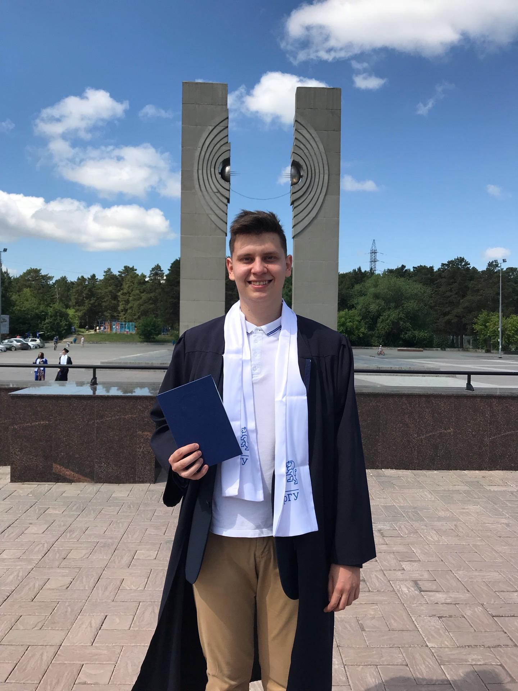
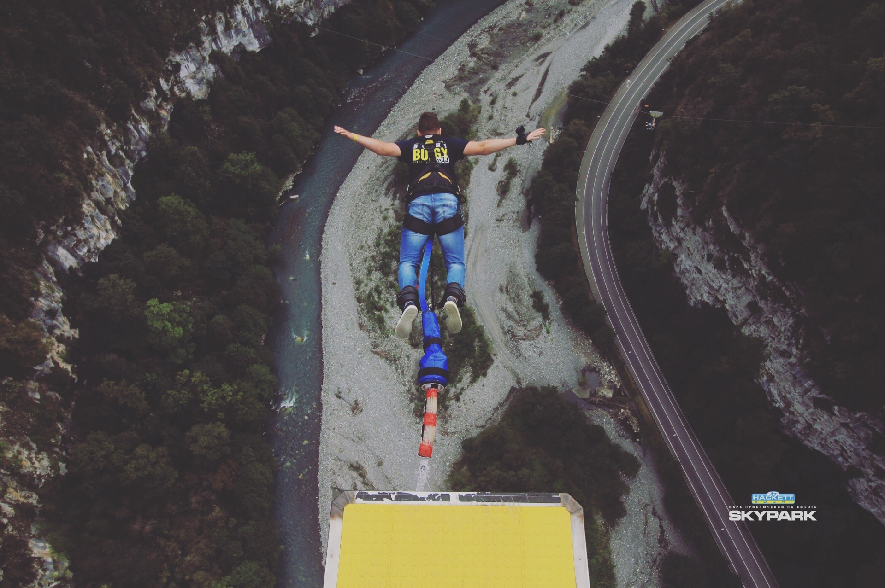
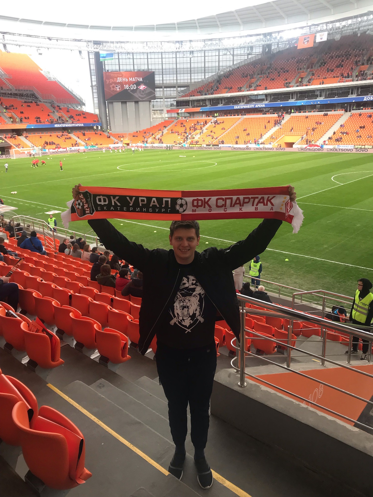

День рождения: 16 июля 1996 г
Город: Челябинск
Семейное положение: не женат
Образование: ВУЗ: ЮУрГУ, ВШЭиКН, кафедра ЭВМ, бакалавр, 2014-2018 гг; ЮУрГУ, ВШЭиКН, кафедра ЭВМ, магистратура, 2018-2020 гг
Форма обучения: Очное отделение
Школа: Школа №2, г. Кыштым, 2003-2014 гг
| Java | JavaScript | C++ | C# | Swift | |
| Отличное владние | нет | нет | нет | нет | нет |
| Хорошее владние | нет | да | да | да | нет |
| Среднее владние | да | да | да | да | да |
| Плохое владение | нет | нет | да | да | нет |
Телефон:
Имя:
Здраствуйте, меня зовут Владимир Вертушков. Я родился в городе Кыштыме Челябинской области. До 2020 года являлся студентом ЮУрГу, высшей школы электроники и компьютерных наук. Обучался на специальности электронно-вычислительные машины. В 2018 году получил степень бакалавра на данной кафедре. Темой выпускной квалификационной работы была "Разработка программно-аппаратного комплекса получения информации с датчиков сигнализирующих о состоянии автомобиля". Работа была защищена на оценку "хорошо". В 2020 году получил степень магистра. Темой выпускной квалификационной работы была "Разработка мобильного аудиогида для городских туристических маршрутов". Работа была защищена на оценку "хорошо". Окончил учебный курс по языку JavaScript на ресурсе learn.javascript.ru. По окончанию курса был выполнен курсовой проект «Ресторан с онлайн-заказом». Выполнял тестовые задания по frontend с использованием react и react native.

Я люблю путешествовать. Несколько лет назад я посетил Крым, проехал по всему побережью. Два года подряд ездил в Сочи. Прыгал с самой высокой "тарзанки" в России. Она расположена на подвисном мосту в Скайпарке. Высота платформы 207 метром над уровнем земли.

Также мое хобби - футбол. Слежу за всеми популярными лигами. Болею за футбольный клуб Спартак Москва. В мае 2019 года посетил матч Урал-Спартак в Екатеринбурге.
